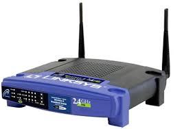

Un Access Point (AP) è un dispositivo elettronico di telecomunicazioni che, collegato ad una rete cablata, o anche, per esempio, ad un router, permette all'utente mobile di accedervi in modaltà wireless direttamente tramite il suo terminale, se dotato di scheda wireless. Se esso viene collegato fisicamente ad una rete cablata (oppure via radio ad un altro access point), può ricevere ed inviare un segnale radio all'utente grazie ad antenne e apparati di ricetrasmissione, permettendo così la connessione sotto forma di accesso radio